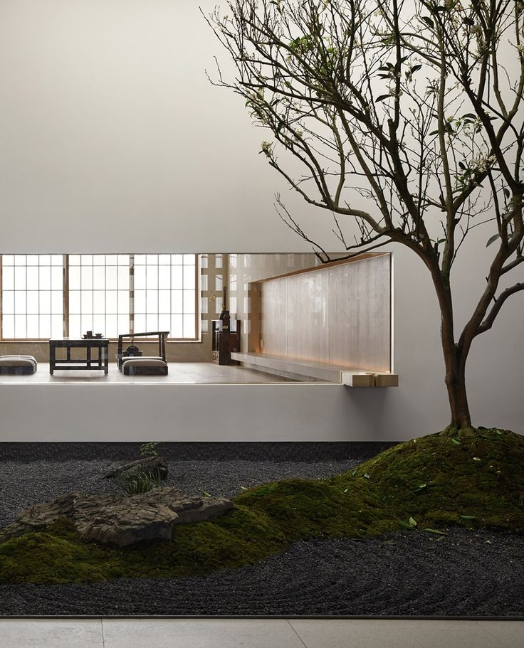
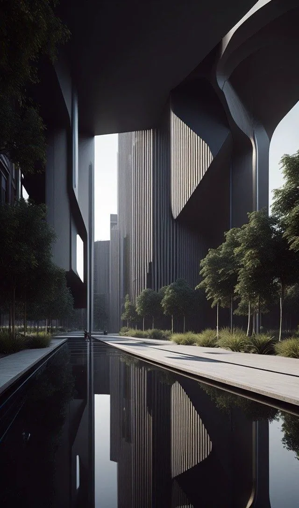
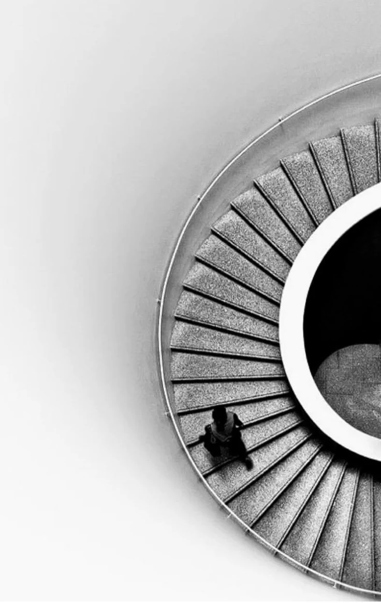
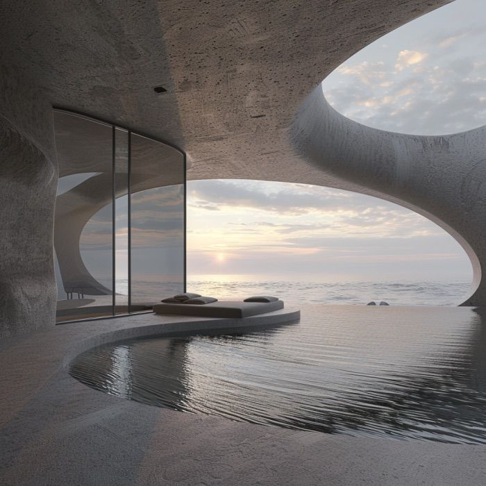

CLARITY
Manifesto
Quiet forms,
precise shadows,
living spaces.
VOID STUDIO 以建筑、室内与庭院的一体化关系为核心，强调清晰比例、低饱和材质和可被慢慢感知的空间节奏。



以山地边界、悬挑露台与雾灰光线组织建筑形体，呈现安静、清晰且富有张力的空间关系。
VOID STUDIO 以建筑、室内与庭院的一体化关系为核心，强调清晰比例、低饱和材质和可被慢慢感知的空间节奏。






作品以编号、类型、年份和地点归档，让不同尺度的空间实践保持清晰。
山地住宅 / 2026
Concept
庭院空间 / 2025
Residence
住宅建筑 / 2024
Civic
海岸空间 / 2024
Interior